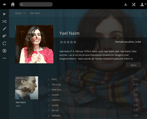

Plex Media Server
Dieser Artikel wurde für die folgenden Ubuntu-Versionen getestet:
Ubuntu 14.04 Trusty Tahr
Artikel für fortgeschrittene Anwender
Dieser Artikel erfordert mehr Erfahrung im Umgang mit Linux und ist daher nur für fortgeschrittene Benutzer gedacht.
Zum Verständnis dieses Artikels sind folgende Seiten hilfreich:
Plex Media Server  (PMS) ist ein kommerzieller Allround-Medienserver, der für verschiedene Betriebssysteme verfügbar ist. Dieser dient zur Katalogisierung der eigenen Medienbibliothek. Gleichzeitig ist ein eigener Webplayer enthalten, der Video- und Audio-Dateien sowie Bilder über den Browser wiedergeben kann. Als Lizenztyp ist Freemium angegeben: Die Basisfunktionen sind kostenlos nutzbar, Erweiterungen und spezielle Wünsche sind kostenpflichtig.
(PMS) ist ein kommerzieller Allround-Medienserver, der für verschiedene Betriebssysteme verfügbar ist. Dieser dient zur Katalogisierung der eigenen Medienbibliothek. Gleichzeitig ist ein eigener Webplayer enthalten, der Video- und Audio-Dateien sowie Bilder über den Browser wiedergeben kann. Als Lizenztyp ist Freemium angegeben: Die Basisfunktionen sind kostenlos nutzbar, Erweiterungen und spezielle Wünsche sind kostenpflichtig.
Das Programm besteht sowohl aus einer Server- als auch einer Client-Komponente. Als Client kann neben der Weboberfläche u.a. auch das proprietäre Plex Home Theater (eine Kodi-ähnliche Oberfläche) dienen.
Funktionen:
Unterstützung diverser Medien (Audio, Video, Bilder)
Elegante, mehrsprachige Weboberfläche
Komfortable Suche
Unzählige Zusatzfunktionen (z.B. Video-Transcoding)
Integrierter DLNA-Server
Einbindung externer Online- und Cloud-Dienste (kostenpflichtig)
In diesem Artikel wird nur auf einen Bruchteil der vorhandenen Funktionen eingegangen. Wer tiefer einsteigen möchte, sei auf die ausführliche Dokumentation im Abschnitt Links am Ende des Artikels und eigene Recherchen verwiesen.
Voraussetzungen¶
Während der Installation kann es zu Abhängigkeitsproblemen kommen, wenn die Pakete avahi-daemon und avahi-utils fehlen. Diese können aus den offiziellen Paketquellen nachinstalliert werden [2]:
avahi-daemon
avahi-utils
 mit apturl
mit apturl
Paketliste zum Kopieren:
sudo apt-get install avahi-daemon avahi-utils
sudo aptitude install avahi-daemon avahi-utils
Installation¶
 Der Plex Media Server ist nicht in den offiziellen Paketquellen von Ubuntu enthalten und muss somit manuell als Fremdpaket installiert werden. Alternativ ist im Software-Center eine ältere Version zu finden: plexmediaserver .
Der Plex Media Server ist nicht in den offiziellen Paketquellen von Ubuntu enthalten und muss somit manuell als Fremdpaket installiert werden. Alternativ ist im Software-Center eine ältere Version zu finden: plexmediaserver .
Fremdpaket¶
Das aktuelle DEB-Paket (ca. 100 MiB) kann auf der offiziellen Projektseite  für heruntergeladen und manuell installiert werden [1]. Bitte auf die richtige Systemarchitektur (32- oder 64-Bit) achten.
für heruntergeladen und manuell installiert werden [1]. Bitte auf die richtige Systemarchitektur (32- oder 64-Bit) achten.
Hinweis!
Fremdpakete können das System gefährden.
Updates¶
Bei der Installation des Fremdpakets wird automatisch eine Fremdquelle zur Aktualisierung eingebunden. Der Inhalt der Datei /etc/apt/sources.list.d/plexmediaserver.list:
deb http://plex.r.worldssl.net/PlexMediaServer/ubuntu-repo lucid main
Leider ist diese Fremdquelle seit Sommer 2013 nicht mehr verfügbar (siehe Ubuntu repo ). Alternativ kann einfach ein aktuelleres Fremdpaket heruntergeladen und über die vorhandene Version installiert werden (ein laufender Plex Media Server wird dabei automatisch gestoppt und im Anschluss neu gestartet).
Konfiguration¶

Benutzerrechte einstellen¶
Wenn man später Bibliotheken für Musik oder andere Medien einrichten möchte, ist das korrekte Setzen von Dateirechten essentiell. Da der Server mit der Benutzerkennung plex läuft, muss der Zugriff auf Ordner bzw. Dateien für diesen Benutzer explizit gestattet werden:
sudo chown -R BENUTZERNAME:plex MEDIENORDNER sudo chmod -R 770 MEDIENORDNER
Ein Beispiel, um den Ordner ~/Musik/ in Plex einbinden zu können (BENUTZERNAME anpassen):
sudo chown -R BENUTZERNAME:plex /home/BENUTZERNAME/Musik sudo chmod -R 770 /home/BENUTZERNAME/Musik
Indirekt bedeutet das auch, das auf externe Speichermedien mit Dateisystemen wie FAT32 oder NTFS nicht ohne weiteres zugegriffen werden kann, da deren Dateiberechtigungen mit Linux inkompatibel sind (zumindest für NTFS gibt es aber eine Lösung).
Darüber hinaus ist speziell bei der Verwendung von Videos eine bestimmte Ordnerstruktur notwendig. Weitere Hinweise sind im Abschnitt Media Preparation der Online-Dokumentation zu finden.
Benutzer anpassen¶
Alternativ kann auch der Standardbenutzer, unter welchem Plex gestartet wird, geändert werden. Dazu öffnet man die Konfigurationsdatei /etc/default/plexmediaserver und ändert den BENUTZERNAMEN in folgender Zeile in den gewünschten Benutzer ab:
PLEX_MEDIA_SERVER_USER = BENUTZERNAME
Nach dem Abspeichern der Datei ist ein Neustart des Computers bzw. ein Neustart von Plex notwendig:
sudo service plexmediaserver restart
Weitere Einstellungen¶
Andere Einstellungen können bei Bedarf nach der Installation bequem über die Weboberfläche vorgenommen werden. Aufgrund der zahllosen Verwendungsmöglichkeiten sollte man dafür etwas Zeit einplanen. Gespeichert werden alle Einstellungen in der Datei /var/lib/plexmediaserver/Library/Application Support/Plex Media Server/Preferences.xml (Leerzeichen im Pfad beachten).
Einige wenige Einstellungen sind nicht über die Weboberfläche zugänglich (siehe Advanced Server Settings ). Nach einer Änderung ist der Server neu zu starten.
Verwendung¶
Server¶
Nach einem Neustart des Rechners steht der Plex Media Server automatisch zur Verfügung. Die Server-Komponente kann via Upstart über die Kommandozeile gesteuert werden:
sudo service plexmediaserver OPTION
Alternativ kann die ältere SysV-Init-Syntax wie bei anderen Diensten verwendet werden:
sudo /etc/init.d/plexmediaserver OPTION
Folgende Optionen stehen zur Verfügung: start, stop und restart.
Bei Problemen erleichtern Logdateien die Diagnose. Diese sind aber nicht im Ordner /var/log/ zu finden, sondern unter /var/lib/plexmediaserver/Library/Application Support/Plex Media Server/Logs/ (Leerzeichen im Pfad beachten).
Client¶
Um auf die Plex-Weboberfläche über den Browser zuzugreifen, wird folgende Adresse (URL) verwendet:
http://IP-ADRESSE_ODER_SERVERNAME:32400/web/oderhttp://localhost:32400/web/(nur bei Installation auf einem Desktop-Rechner)
Beim ersten Zugriff kommt es zu einer kurzen Selbstkonfiguration des Plex Media Servers. Nach wenigen Sekunden ist dieser bereit zur Nutzung.
Bibliotheken einrichten¶
Möchte man auf dem Rechner vorhandene Medien einbinden, ist die oben beschriebene korrekte Konfiguration der Dateirechte eine wichtige Grundvoraussetzung. Das Hinzufügen einer Bibliothek selbst erledigt man über das +-Symbol neben dem Rechnernamen links oben. Nachdem ein Name und der Medientyp die Bibliothek festgelegt wurde (zur Auswahl stehen die Rubriken "Filme", "TV-Serien", "Musik", "Fotos" und "Home-Videos"), muss nur noch der Pfad zum Medienordner angegeben werden. Anschließend werden die Metadaten ausgelesen und begleitende Künstlerinformationen vervollständigt, bevor die Bibliothek in der linken Randspalte der Weboberfläche auftaucht.
| Startseite mit Abspielfunktionen (unten) |
| Musikbibliothek in Detailansicht |
|  |
| Künstlerinformationen |
Medien abspielen¶
Neben der selbsterklärenden Weboberfläche stehen diverse Client-Programme, abhängig vom eingesetzten Betriebssystem, zur Verfügung. Daneben kann über den integrierten DLNA-Server die eigene Mediensammlung auch mit entsprechender Hardware (z.B. SmartTVs) abgerufen werden.
Tastenkürzel¶
Einige praktische Tastenkürzel innerhalb der Weboberfläche (Auszug).
| Navigation | |
| Taste | Beschreibung |
| ? | zeigt alle verfügbaren Tastenkürzel an |
| / | Suchen |
| Aktionen | |
| Taste(n) | Beschreibung |
| P | Webplayer öffnen |
| E | Ausgewähltes Element bearbeiten |
| ⇧ + S | Änderungen speichern |
| # oder Entf | Ausgewähltes Element löschen |
| R | Aktualisieren (Titel oder Bibliothek) |
| W | Als gesehen markieren |
| U | Als ungesehen markieren |
| I | Informationen |
| Webplayer | |
| Taste(n) | Beschreibung |
| Pause/Wiedergabe | |
| ↑ | Lauter |
| ↓ | Leiser |
| → | Nächster Titel |
| ← | Vorheriger Titel |
| . oder ⇧ + → | 15 Sekunden vor |
| , oder ⇧ + ← | 15 Sekunden zurück |
| [ oder Alt + → | 10 Minuten vor |
| ] oder Alt + ← | 10 Minuten zurück |
Problembehebung¶
Upgrade Ubuntu 12.04 auf 14.04¶
Bei einem Upgrade von Ubuntu 12.04 auf 14.04 wird ein bereits vorhandener Plex Media Server automatisch entfernt, aber sämtliche Einstellungen und Datenbanken bleiben erhalten. Nach dem Upgrade muss der PMS also einfach nur neu installiert werden.
Links¶
FAQ
- häufige Fragen und Antworten
Plex Media Server Linux Ubuntu Server 12.04.2 LTS
 - Blogbeitrag, 05/2013
- Blogbeitrag, 05/2013Erweiterte Einstellungen – Plex Media Server Linux Ubuntu Server 12.04.2 LTS
- Blogbeitrag, 08/2013
Plex - Wikipedia
Musik verwalten
 weitere Mediaserver (Audio)
weitere Mediaserver (Audio)
- Erstellt mit Inyoka
-
 2004 – 2017 ubuntuusers.de • Einige Rechte vorbehalten
2004 – 2017 ubuntuusers.de • Einige Rechte vorbehalten
Lizenz • Kontakt • Datenschutz • Impressum • Serverstatus -
Serverhousing gespendet von